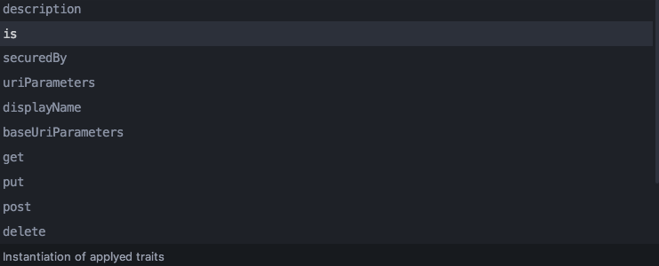
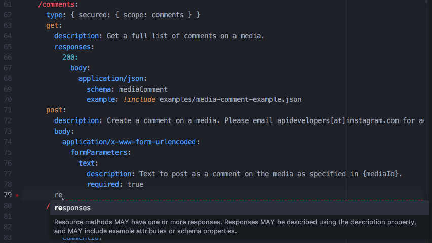
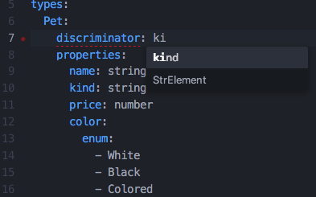

- Getting Started
- Code Completion
- General API Workbench Functionality
- Navigation
- Outline and Details
- Validation
- Wizards
Code Completion
Code completion may be activated by pressing Ctrl+Space keyboard shortcut. Code completion is also activated automatically when available.
When the completion popup appears, it lists a number of proposals, which can be selected with the mouse or the Up and Down keys. Pressing Enter or clicking the suggestion inserts the corresponding code into the editor.
The completion popup displays the current suggestion description in the bottom, if available.
The completion popup only displays suggestions which begin with the user’s input.

The following are the supported cases.
Structure completion

This type of completion is responsible for suggesting keywords. The suggested keywords are proposed only in a correct context, when these keyword can be correctly used in the current place in the RAML structure tree.
Reference completion

This type of completion has a lot of manifestations, but the general rule is as follows: based on the current context, it suggests to the user to type a reference to an element, located in the same file, or a file included from the current one, such that the suggestion is appropriate for the current context.
Completion for the following kinds of element is supported:
- Built-in types
- User-defined types
- Resource types
- Traits
- Resource type/ Trait Parameters
- Security schemes
Path completion

Path completion is available when user types in an include path. Currently typed segments of path are resolved and files inside are used to provide completion proposals.
Common values completion

This completion suggests common values.
Example completion

When typing a type example in YAML syntax, type properties are proposed by the completion engine.
Facet completion

Known facets for the type are proposed. CustomSecurityScheme facets are also proposed.
Type discriminator completion

This completion proposes discriminator value basing on a type properties.